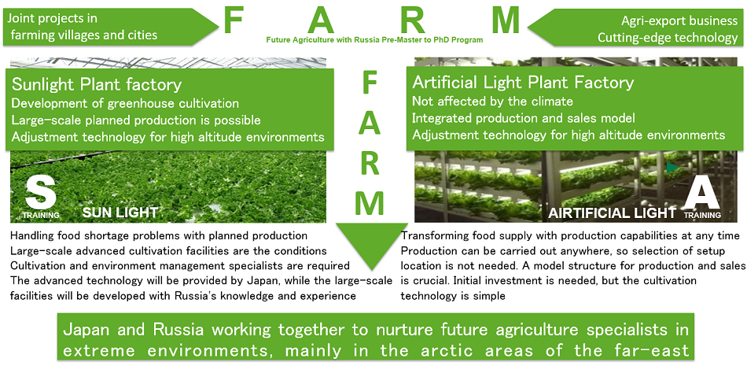

事業の概要

事業の概要
本事業は、極東ロシアにおいて食料生産から流通・販売ビジネスまで含めた未来農業（高度施設園芸、植物工場、養蜂、IT利活用）を理解でき、日露の共同事業に貢献できる人材育成を目的とし、大きく３つの領域でプログラムを実行する。第一は、未来農業の中心である「太陽光利用型植物工場」と「人工光型植物工場」における環境制御、栽培技術・管理、デバイス開発に関するプログラム、第二は「植物工場」や「有機栽培」の生産工程管理、マーケティング、ライフサイクルアセスメント等に関するプログラム、第三は「養蜂」や「在来作物」のビジネスイノベーションに関するプログラムである。栽培や環境に関わる領域だけではなく、工学やマーケティングに関するプログラムを学び、極東地域における日露共同事業の柱の一つとされている、温室ビジネスや食品ビジネスで活躍できる人材を育成する。
交流プログラムの概要
プレ修士（学部２～４年生）、修士課程、博士課程を通じて、双方向の交流を行う。受入れプログラムは、人工光型植物工場を中心とした６週間のA－Trainingと、太陽光利用型植物工場を中心とした1２週間のS-Trainingの２つの系統で、派遣プログラムは、ビジネスイノベーションを中心とした６週間のB－Trainingと、生産工程管理やマーケティングを中心とした1２週間のT-Trainingの２つの系統で実施される。いずれも、未来農業に関わる知識（植物生理、栽培管理、環境調節、デバイス開発、施設運営、マネジメント、マーケティング等）の講義、演習に加えて、企業と連携して技術を修得するインターンシップ等で構成される。
本事業で養成する人材像
極東ロシアにおいて食料生産から流通・販売ビジネスまで含めた未来農業を理解でき、日露の共同事業に貢献できる人材育成を目的とする。未来農業は、生産過程に加えて、流通・消費などを含めた「次世代６次産業」を体現するものであることから、園芸学、工学、経営学、マーケティング等複数の領域に長けたグローバル人材が求められている。加えて、日本－極東ロシアで連携した共同事業に貢献し、マネージできる人材の育成を目指す。
本事業の特徴
本プログラムは、以下の４つの特徴を持っている。
- 日本とロシアが共同し「極東の寒冷地」における未来農業のスペシャリストを育成するプログラム
- 未来農業ビジネスプロフェッショナルを育成するプログラム
- 人工光型と太陽光利用型の植物工場で未来農業を学ぶプログラム
- ２～４回の留学を実施するサンドイッチプログラム